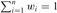
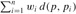

|
|
< Day Day Up > |
|
We now examine a selection algorithm whose running time is O(n) in the worst case. Like RANDOMIZED-SELECT, the algorithm SELECT finds the desired element by recursively partitioning the input array. The idea behind the algorithm, however, is to guarantee a good split when the array is partitioned. SELECT uses the deterministic partitioning algorithm PARTITION from quicksort (see Section 7.1), modified to take the element to partition around as an input parameter.
The SELECT algorithm determines the ith smallest of an input array of n > 1 elements by executing the following steps. (If n = 1, then SELECT merely returns its only input value as the ith smallest.)
Divide the n elements of the input array into ⌊n/5⌋ groups of 5 elements each and at most one group made up of the remaining n mod 5 elements.
Find the median of each of the ⌈n/5⌉ groups by first insertion sorting the elements of each group (of which there are at most 5) and then picking the median from the sorted list of group elements.
Use SELECT recursively to find the median x of the ⌈n/5⌉ medians found in step 2. (If there are an even number of medians, then by our convention, x is the lower median.)
Partition the input array around the median-of-medians x using the modified version of PARTITION. Let k be one more than the number of elements on the low side of the partition, so that x is the kth smallest element and there are n-k elements on the high side of the partition.
If i = k, then return x. Otherwise, use SELECT recursively to find the ith smallest element on the low side if i < k, or the (i - k)th smallest element on the high side if i > k.
To analyze the running time of SELECT, we first determine a lower bound on the number of elements that are greater than the partitioning element x. Figure 9.1 is helpful in visualizing this bookkeeping. At least half of the medians found in step 2 are greater than[1] the median-of-medians x. Thus, at least half of the ⌈n/5⌉ groups contribute 3 elements that are greater than x, except for the one group that has fewer than 5 elements if 5 does not divide n exactly, and the one group containing x itself. Discounting these two groups, it follows that the number of elements greater than x is at least
Similarly, the number of elements that are less than x is at least 3n/10 - 6. Thus, in the worst case, SELECT is called recursively on at most 7n/10 + 6 elements in step 5.
We can now develop a recurrence for the worst-case running time T(n) of the algorithm SELECT. Steps 1, 2, and 4 take O(n) time. (Step 2 consists of O(n) calls of insertion sort on sets of size O(1).) Step 3 takes time T(⌈n/5⌉), and step 5 takes time at most T(7n/10+ 6), assuming that T is monotonically increasing. We make the assumption, which seems unmotivated at first, that any input of 140 or fewer elements requires O(1) time; the origin of the magic constant 140 will be clear shortly. We can therefore obtain the recurrence
We show that the running time is linear by substitution. More specifically, we will show that T(n) ≤ cn for some suitably large constant c and all n > 0. We begin by assuming that T(n) ≤ cn for some suitably large constant c and all n ≤ 140; this assumption holds if c is large enough. We also pick a constant a such that the function described by the O(n) term above (which describes the non-recursive component of the running time of the algorithm) is bounded above by an for all n > 0. Substituting this inductive hypothesis into the right-hand side of the recurrence yields
|
T(n) |
≤ |
c ⌈n/5⌉ + c(7n/10 + 6) + an |
|
≤ |
cn/5 + c + 7cn/10 + 6c + an |
|
|
= |
9cn/10 + 7c + an |
|
|
= |
cn + (-cn/10 + 7c + an) , |
which is at most cn if
Inequality (9.2) is equivalent to the inequality c ≥ 10a(n/(n - 70)) when n > 70. Because we assume that n ≥ 140, we have n/(n - 70) ≤ 2, and so choosing c ≥ 20a will satisfy inequality (9.2). (Note that there is nothing special about the constant 140; we could replace it by any integer strictly greater than 70 and then choose c accordingly.) The worst-case running time of SELECT is therefore linear.
As in a comparison sort (see Section 8.1), SELECT and RANDOMIZED-SELECT determine information about the relative order of elements only by comparing elements. Recall from Chapter 8 that sorting requires Ω(n lg n) time in the comparison model, even on average (see Problem 8-1). The linear-time sorting algorithms in Chapter 8 make assumptions about the input. In contrast, the linear-time selection algorithms in this chapter do not require any assumptions about the input. They are not subject to the Ω(n lg n) lower bound because they manage to solve the selection problem without sorting.
Thus, the running time is linear because these algorithms do not sort; the linear-time behavior is not a result of assumptions about the input, as was the case for the sorting algorithms in Chapter 8. Sorting requires Ω(n lg n) time in the comparison model, even on average (see Problem 8-1), and thus the method of sorting and indexing presented in the introduction to this chapter is asymptotically inefficient.
In the algorithm SELECT, the input elements are divided into groups of 5. Will the algorithm work in linear time if they are divided into groups of 7? Argue that SELECT does not run in linear time if groups of 3 are used.
Analyze SELECT to show that if n ≥ 140, then at least ⌈n/4⌉ elements are greater than the median-of-medians x and at least ⌈n/4⌉ elements are less than x.
Suppose that an algorithm uses only comparisons to find the ith smallest element in a set of n elements. Show that it can also find the i - 1 smaller elements and the n - i larger elements without performing any additional comparisons.
Suppose that you have a "black-box" worst-case linear-time median subroutine. Give a simple, linear-time algorithm that solves the selection problem for an arbitrary order statistic.
The kth quantiles of an n-element set are the k - 1 order statistics that divide the sorted set into k equal-sized sets (to within 1). Give an O(n lg k)-time algorithm to list the kth quantiles of a set.
Describe an O(n)-time algorithm that, given a set S of n distinct numbers and a positive integer k ≤ n, determines the k numbers in S that are closest to the median of S.
Let X[1 .. n] and Y [1 .. n] be two arrays, each containing n numbers already in sorted order. Give an O(lg n)-time algorithm to find the median of all 2n elements in arrays X and Y.
Professor Olay is consulting for an oil company, which is planning a large pipeline running east to west through an oil field of n wells. From each well, a spur pipeline is to be connected directly to the main pipeline along a shortest path (either north or south), as shown in Figure 9.2. Given x- and y-coordinates of the wells, how should the professor pick the optimal location of the main pipeline (the one that minimizes the total length of the spurs)? Show that the optimal location can be determined in linear time.
Given a set of n numbers, we wish to find the i largest in sorted order using a comparison-based algorithm. Find the algorithm that implements each of the following methods with the best asymptotic worst-case running time, and analyze the running times of the algorithms in terms of n and i.
Sort the numbers, and list the i largest.
Build a max-priority queue from the numbers, and call EXTRACT-MAX i times.
Use an order-statistic algorithm to find the ith largest number, partition around that number, and sort the i largest numbers.
For n distinct elements x1, x2, ..., xn with positive weights w1, w2, ..., wn such that , the weighted (lower) median is the element xk satisfying
and
Argue that the median of x1, x2, ..., xn is the weighted median of the xi with weights wi = 1/n for i = 1,2, ..., n.
Show how to compute the weighted median of n elements in O(n lg n) worst-case time using sorting.
Show how to compute the weighted median in Θ(n) worst-case time using a linear-time median algorithm such as SELECT from Section 9.3.
The post-office location problem is defined as follows. We are given n points p1, p2, ..., pn with associated weights w1, w2, ..., wn. We wish to find a point p (not necessarily one of the input points) that minimizes the sum , where d(a, b) is the distance between points a and b.
Argue that the weighted median is a best solution for the 1-dimensional post-office location problem, in which points are simply real numbers and the distance between points a and b is d(a, b) = |a - b|.
Find the best solution for the 2-dimensional post-office location problem, in which the points are (x, y) coordinate pairs and the distance between points a = (x1, y1) and b = (x2, y2) is the Manhattan distance given by d(a, b) = |x1 - x2| + |y1 - y2|.
The worst-case number T(n) of comparisons used by SELECT to select the ith order statistic from n numbers was shown to satisfy T(n) = Θ(n), but the constant hidden by the Θ-notation is rather large. When i is small relative to n, we can implement a different procedure that uses SELECT as a subroutine but makes fewer comparisons in the worst case.
Describe an algorithm that uses Ui(n) comparisons to find the ith smallest of n elements, where
(Hint: Begin with ⌊n/2⌋ disjoint pairwise comparisons, and recurse on the set containing the smaller element from each pair.)
Show that, if i < n/2, then Ui(n) = n + O(T (2i) lg(n/i)).
Show that if i is a constant less than n/2, then Ui(n) = n + O(lg n).
Show that if i = n/k for k ≥ 2, then Ui(n) = n + O(T (2n/k) lg k).
[1]Because of our assumption that the numbers are distinct, we can say "greater than" and "less than" without being concerned about equality.
|
|
< Day Day Up > |
|